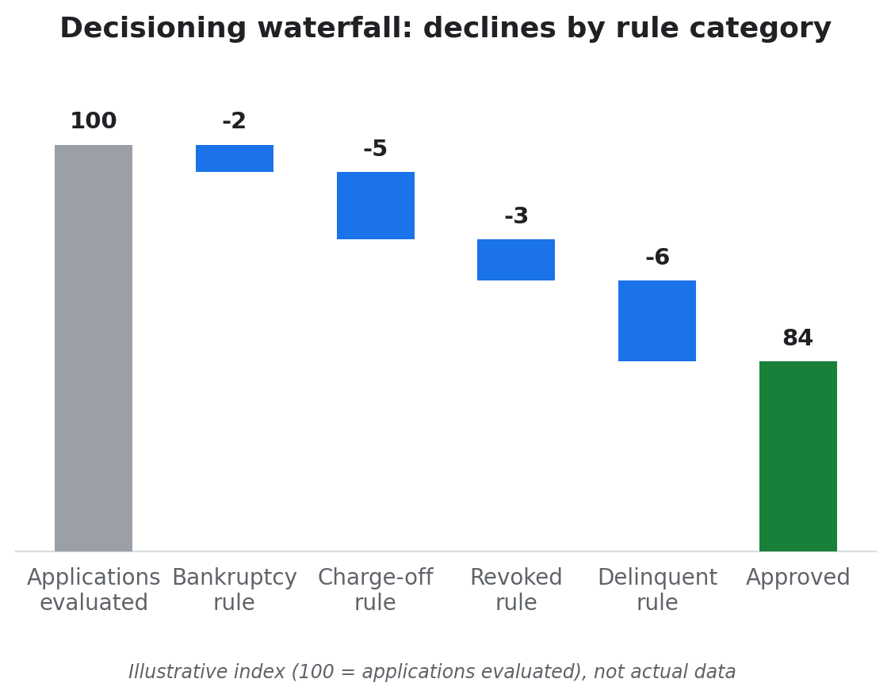
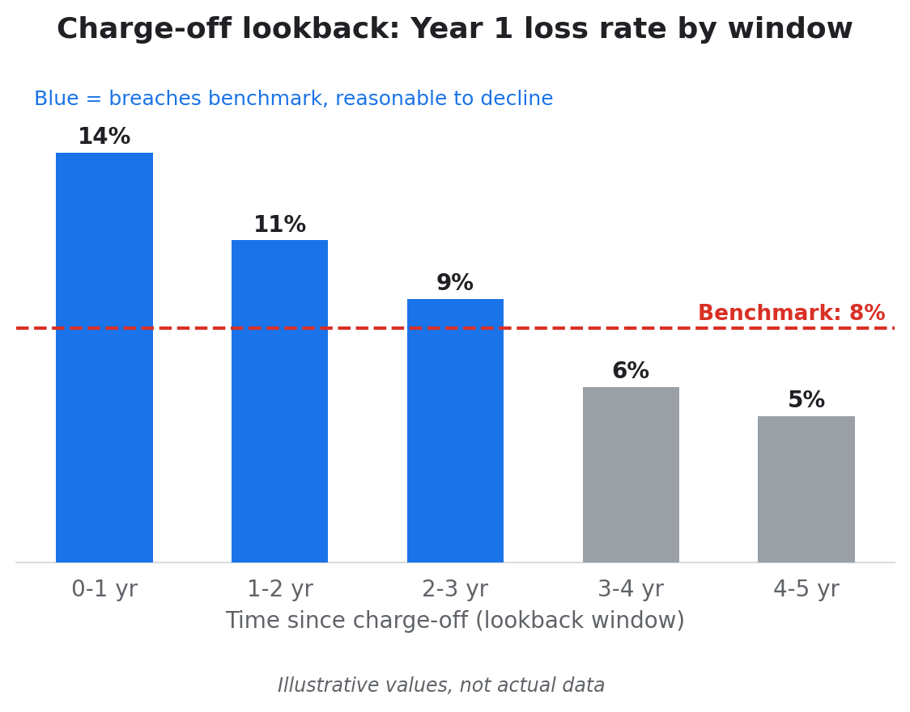
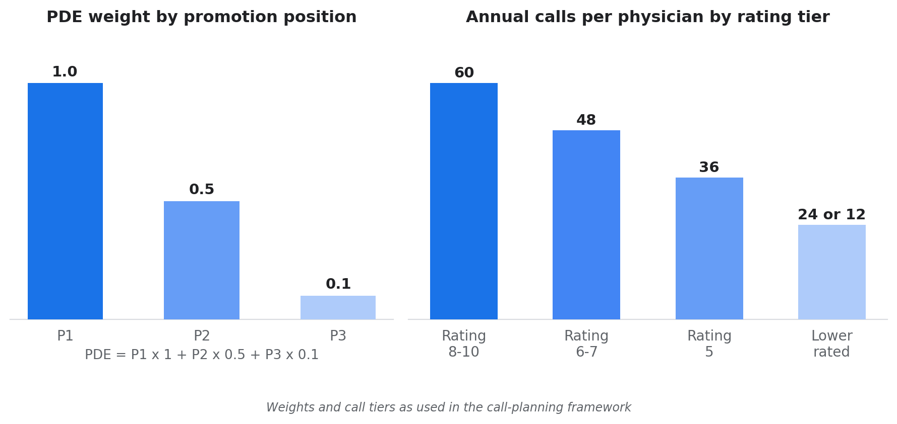
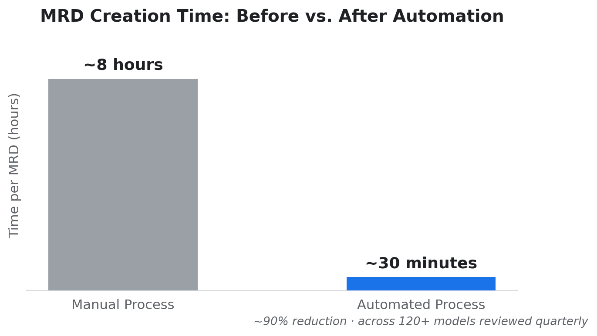
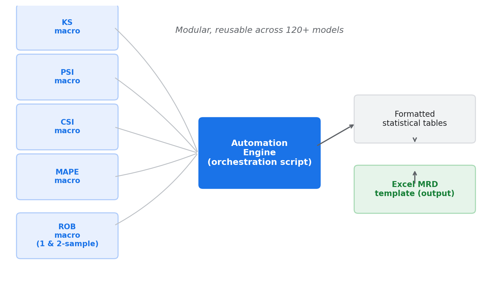
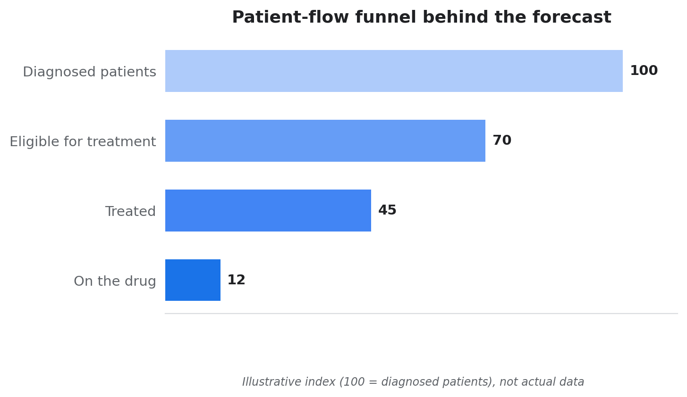
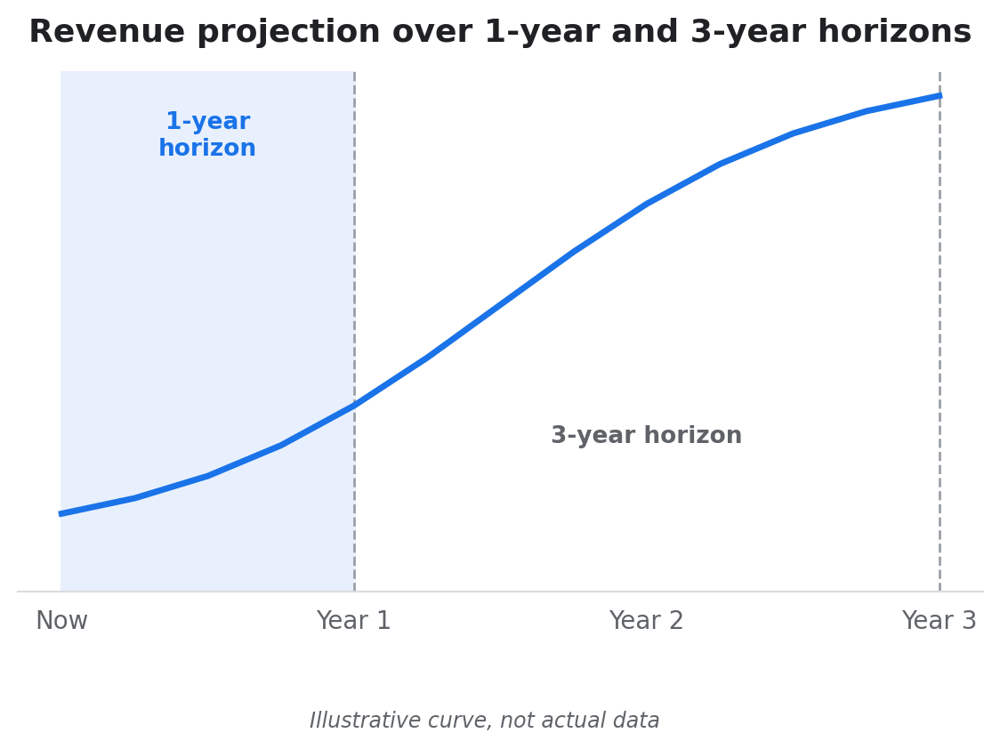

Data and analytics professional with 7 years of experience across financial services (Citi) and pharma consulting (ZS Associates). This page covers real work I've delivered: risk policy design, process automation, commercial resource allocation, and forecasting with client-facing team leadership.
Note: client and employer details are anonymized, and charts marked "illustrative" show the shape of the work, not actual data.
Standardizing risk policy across card portfolios
Can inconsistent risk policies across portfolios become one, without distorting approval rates?
Citi's Retail Services co-branded card portfolios each ran their own version of existing customer management (ECM) rules: the policies for bankruptcy, charge-off, revoked and delinquent accounts. Small differences between portfolios created operational complexity.
Key findingEach candidate rule was tested against first-year performance versus risk benchmarks before it was recommended. The final standardized rules changed the overall approval rate by a net -0.01%, with gains in some portfolios and losses in others, each justified by performance data.

Illustrative: how applications flow through the four rule categories.
What I did
Collated every ECM rule from each portfolio's specification and grouped them into four categories, noting where variables and lookback periods differed.
Rebuilt the production decisioning waterfall from raw application-level data and debugged it until it closely matched live production decisions.
Flagged what each rule would do if applied to portfolios without it, and split lookback periods (for example 0-1 to 4-5 years for charge-offs) to find the best cut-off.

Illustrative: a lookback window is reasonable to decline when its first-year performance breaches the benchmark.
Pulled first-year performance for affected accounts and compared GCL unit and dollar rates with Risk Assessment Framework (RAF) benchmarks.
Aligned with a US-based director on one proposed rule per category, then built swap-in/swap-out views and a deck for the Acquisitions Strategy lead.
Tools: SAS, Excel, RAF benchmarking
Allocating sales resources for a drug launch
How do you launch a new drug's salesforce while protecting an existing priority brand?
For a pharma client, sales rep calls are a finite resource: each rep had a fixed annual call capacity, spread across physicians by rating tier. A new drug launch needed a dedicated salesforce built from reps on existing teams.
Key findingGiving both the launch brand and the existing priority brand the first promotion position in the restructured teams focused effort on the two brands that mattered most, as measured by Primary Detail Equivalents (PDE).

Left: each position in a call carries a weight, and PDE sums them. Right: higher-rated physicians receive more calls per year.
What I did
Merged physician and rep data into alignments (which rep can target which physician), then distributed each rep's annual calls by rating tier, from 60 calls for the top ratings down to 12 for the lowest.
Tracked promotion with PDE: a rep promotes up to 3 drugs per call, weighted 1.0, 0.5 and 0.1 by position, against PDE targets for each drug.
Moved a subset of reps into a new launch team, with the launch brand and the existing priority brand in first position and other brands in second and third.
Delivered on strict quarterly timelines and presented findings regularly to the manager and client in the US.
Also led the migration of the call-planning workflow from SAS to R ahead of SAS decommissioning, reducing project costs by about 90%.
Can a quarterly compliance process covering 120+ models run in about 30 minutes per model instead of 8 hours?
At Citi, model monitoring required Model Review Documents (MRDs) for 120+ decision models every quarter. Each was a manual, roughly 8-hour process prone to error.
Key findingA modular SAS macro framework cut MRD creation to about 30 minutes per model, roughly a 90% reduction, and removed manual calculation errors from a compliance-critical process.

Time to produce one MRD, before and after automation.
What I built
A separate SAS macro for each metric (KS, PSI, CSI, MAPE, and one-sample and two-sample Rank Order Break), each reusable across model types. A central script runs the macros, formats the output into the required tables and exports it into the Excel MRD template. This modular design let one codebase work across 120+ models with different data structures.

Five independent macros feed one orchestration script.
Tools: SAS, Excel, KS, PSI, CSI, MAPE, Rank Order Break
Forecasting and client delivery for a European pharma client
What does patient-flow forecasting look like when you are also leading the delivery team?
As Business Insights and Analytics lead for a pharma client's Italy market, I managed the India-based team supporting forecasting and reporting across Oncology, Hematology and Immunology, working directly with the client team in Rome.
ApproachI forecasted revenue by estimating how many patients moved through each stage of care, from diagnosis to treatment with the drug, rather than extending past sales trends. Every projection could be traced back to patient numbers at each stage.

Illustrative: patient-flow stages that drive the forecast.
What I did
Led a team of 3 analysts, owned client requests end to end and turned them into team workstreams.
Built Excel-based patient-funnel models projecting units and revenue over 1-year and 3-year horizons.

Illustrative: projections over the two planning horizons.
Built reporting dashboards for ongoing performance tracking.
Presented forecasts and findings regularly to the client's associate director of Business Insights and Analytics, and spent several weeks on-site in Rome working with the client team.